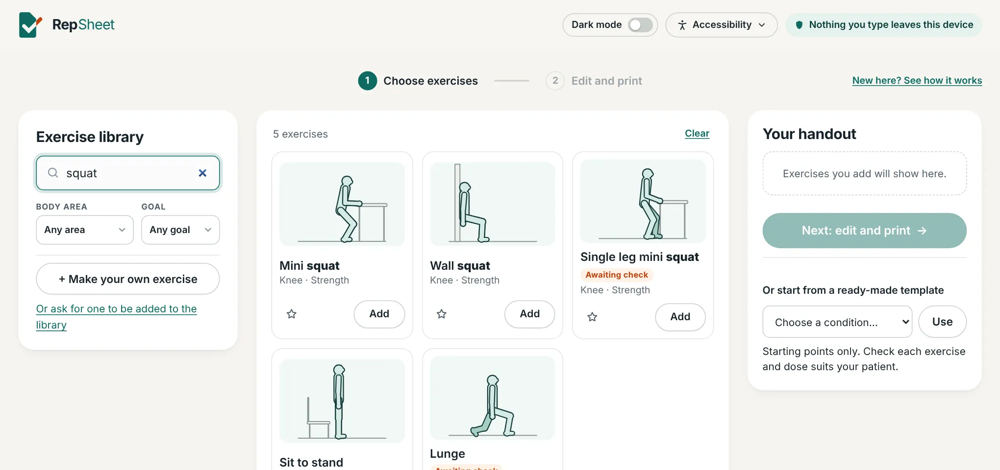
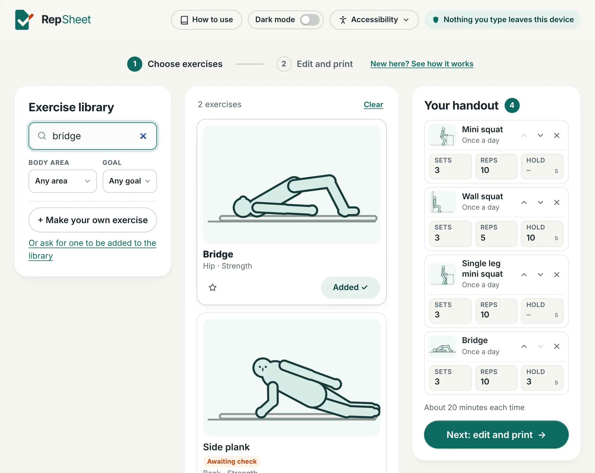
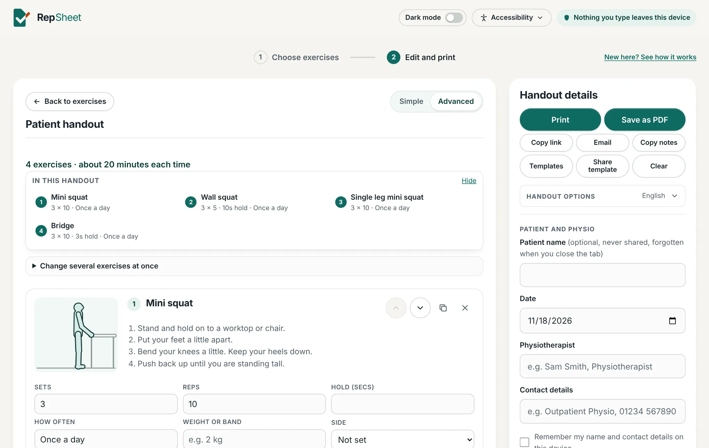
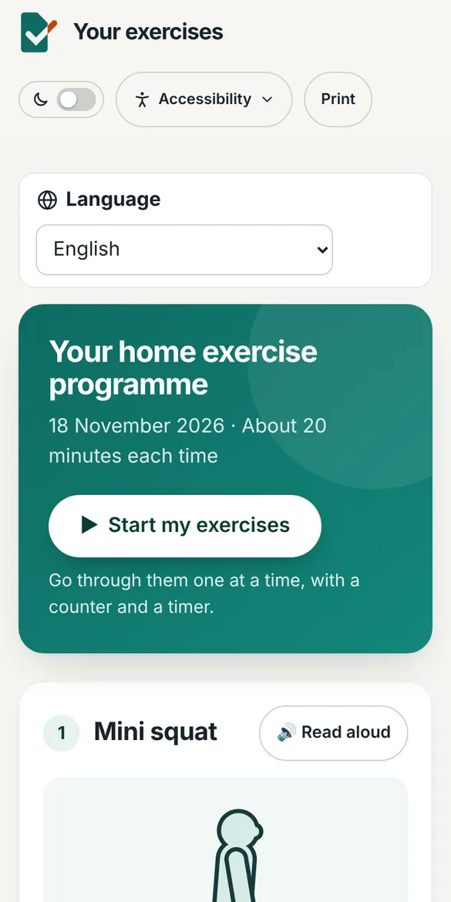
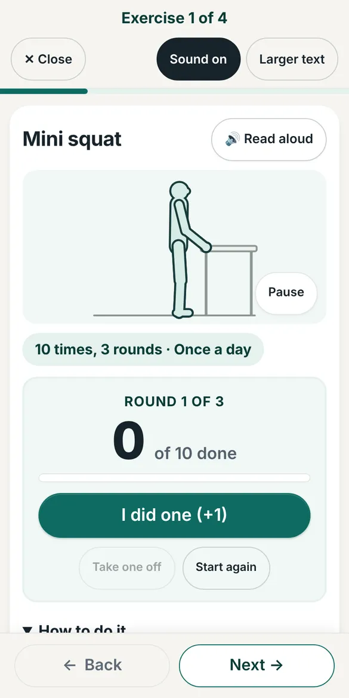

How to use RepSheet
Last updated: 18 November 2026
A guide for physiotherapists. It walks through every part of the builder, and the small extras that help patients actually do their exercises. You can come back to it any time from How to use in the builder's top bar (the book icon on a phone).
The short version
- Find exercisesType in the search box, or pick a body area.
- Add themPress Add. They collect in "Your handout" on the right.
- Press Next"Next: edit and print" takes you to step 2.
- Set the doseSets, reps and holds in Your handout, or everything on each card in step 2.
- Hand it overPrint, save as PDF, or give the link or QR code.
Find exercises
The builder has two steps, shown at the top: 1 Choose exercises and 2 Edit and print. This part is step 1.

Search
- Start typing in Type to search… on the left. Matching exercises appear in the middle as you type.
- Search understands other names too. Try "superman", "Kegel" or "shoulder bridge". If an exercise matched by another name, it says "Also called…".
- Use the Body area and Goal dropdowns to narrow the list, for example Knee and Strength. You can use them without typing anything.
- Before you type, quick buttons for common areas (Knee, Back, Shoulder, Hip, Ankle, Neck) are shown, with your favourites and recently used exercises underneath.
- Keyboard: press / to jump to the search box, and Esc to clear it.
Look before you add
- Tap an exercise's name or picture to preview it: the moving picture, the steps and the usual dose. You can add it from the preview with Add to handout.
- Press Add to put it on the handout. It appears in Your handout on the right, where you can move it up or down or remove it.
- Each exercise in Your handout has small Sets, Reps and Hold boxes (hold is in seconds). Type in them to change the dose straight away. Step 2 shows the same numbers, along with how often, weight and side.
- An orange Awaiting check label means a newer exercise that has not yet had a clinical review. Read it through before you use it.
Favourites and recently used
- Press the star on any exercise to make it a favourite. Favourites are shown first, before you start typing.
- Exercises you have used lately show under Recently used.
- Both are saved in this browser only, on this computer.

When you're done: press Next: edit and print →. On a phone it sits in the bar at the bottom, next to the number of exercises chosen. You can always go back with ← Back to exercises, or the browser's Back button.
Templates and your own exercises
Save time on the programmes you give again and again.
Ready-made templates
- With nothing chosen yet, Your handout offers Or start from a ready-made template. Pick a condition, such as knee osteoarthritis or low back pain, and its exercises are added for you.
- They are starting points only. Check every exercise and dose suits your patient.
Your own templates
- In step 2, press Templates to save the current programme under a name, such as "ACL week 6". It keeps the exercises, doses, notes and options. It never keeps the patient's name, date, goal or message.
- Load a saved template from the same button, or from the start screen.
- Templates are saved in this browser. To move them to another computer, use Download backup and Load backup in the Templates window.
- Share template makes a link a colleague can open to get the same programme. It has no patient details in it.
Make your own exercise
- Can't find what you need? Press + Make your own exercise under the library. Give it a name, steps (one per line) and a usual dose, and add a photo if you like.
- It is saved in this browser and appears in your searches like any other exercise.
- The patient link carries your words, but never your photo. The photo only appears on the printed handout and PDF.
- You can also ask for an exercise to be added to the library for everyone.
Set the dose
Step 2 shows a card for each exercise. Everything on it can be changed.

- Sets (rounds), Reps (times) and Hold (seconds). Leave Hold at 0 for no hold. You can also change these three in Your handout in step 1, and both places stay the same. The handout writes this in plain words, such as "10 times, 3 rounds".
- How often: pick a suggestion like "Twice a day", or type your own.
- Weight or band: for example "2 kg" or "red band".
- Side: left, right or both.
- The handout shows a rough time for the whole programme, so you can see if it's realistic.
Change several exercises at once
Open Change several exercises at once above the cards. Fill in only the boxes you want to change, tick which exercises, and press Apply. Handy for "3 sets of 10, twice a day" across the board.
Simple or Advanced view
The Simple and Advanced switch above the cards changes how much you see. Simple shows just the picture, name and dose, so it's quick to check. Advanced shows everything. It only changes the screen, not the handout.
Tailor each exercise
These are in Advanced view, on each card.
Note for this exercise
A short tip that prints under the exercise, such as "Keep your knee over your toes".
Edit exercise instructions
Open Edit exercise instructions (for this handout only) to rewrite the steps, one step per line. The card shows an orange Edited label. Reset to standard puts the library wording back. The library itself never changes.
Progressions and regressions
- Open Progressions and regressions and tick a harder or easier version from the library, or write your own.
- They print under "To make it harder" and "To make it easier", so the patient can step up or down between appointments without calling you.
Duplicate, reorder and undo
- Duplicate an exercise to give the left and right sides different doses.
- Change the order with the up and down arrows on each card. You can also reorder in Your handout in step 1.
- Removed something by mistake? Press Undo in the bar that appears at the bottom.
Stages
One handout and one QR code that covers a whole recovery, for example after surgery.
- Under Stages in Handout details on the right, tick Split into stages.
- Name each stage and say when it is, for example "Weeks 0 to 2". Add up to 6 stages.
- Optionally write Move on when, such as "You can stand up from a chair without using your hands".
- On each exercise card, choose its Stage.
The printed handout shows every stage. The patient page shows one stage at a time, and the patient chooses when to move on.
Handout options
Open Handout options on the right in step 2. Each option affects the printout, and most also change the patient page.
| Option | What it does | Good for |
|---|---|---|
| Language | Translates the handout and patient page. You can show English underneath too. Words you typed yourself stay in English. | Patients more at home in another language. Translations are in beta, so check with an interpreter if in doubt. |
| Large print | Bigger text and pictures. | Low vision, older patients. |
| Easy read | Very large text, big step pictures, one exercise per page. | Learning disability, dementia, low literacy. |
| Tick chart | Boxes to tick each day, on paper and on the patient page. | Building a habit, and checking how it went at review. |
| Black & white | No colour fills, crisp black lines. | Mono printers, saving ink. |
| Paper saver | Two columns with smaller pictures. | Long programmes, fewer pages. |
The handout preview in the middle updates as you go, so you can see the effect before printing.
Advice and goals
In step 2, open Patient and physio and Advice and goals on the right. Both fold away; when closed, each shows a short line of what is filled in. On a tablet or phone, first open Patient, physio, advice and stages.
Patient and physio
- Patient name and Date print on the handout only. They are never put in the link or QR code, and are forgotten when you close the tab.
- Physiotherapist and Contact details print at the bottom so the patient knows who to call. Tick Remember my name and contact details on this device to skip typing them next time.
Advice and goals
- Message: a short personal note, such as "Great work today. See you in 2 weeks." It shows in a box at the top of the handout and patient page.
- General advice: anything that applies to the whole programme, such as "Some aching is normal. Stop if pain is sharp."
- Goal, When and How long: what the patient is working towards, when in their day they'll do the exercises, and for how long. Left blank, the handout prints lines for the patient to fill in themselves.
These boxes go into the patient link. Keep names, NHS numbers and dates of birth out of them. RepSheet warns you if something looks like it could identify the patient.
What the patient sees
The link and QR code open a patient page on their own phone. It's worth showing them once in clinic.


- Start my exercises: a follow-along mode that shows one exercise at a time. It counts reps, times holds with a beep (with a Sound on switch), and gives a short rest between rounds. The screen stays on while they use it.
- Read aloud: the phone reads the steps out, in the handout's language where the phone has a voice for it.
- Moving pictures, and a Picture or Video switch where an exercise has a video.
- Tick chart (if you turned it on): they tick each day, and it's saved on their phone.
- Remind me: Add a reminder to my calendar puts a reminder in their phone's calendar for the next 6 weeks, on the days and time they choose.
- Add to home screen: phones offer to add the programme as an app icon, so it's one tap to open.
- Accessibility: Larger text, Easier reading, High contrast and Pause pictures, saved on their phone.
- With stages, they see the current stage and choose when to move on.
The page works offline once opened, and the programme lives in the link itself. Nothing is stored on a server.
Pacing diary
For patients with persistent pain or fatigue, where boom and bust is the problem.
The pacing diary lets a patient record a steady daily amount of activity and track how it goes. It is saved on their own phone only. Send them the link, or open it on their phone in clinic. It's also in the footer of every page.
Accessibility and dark mode
- The Dark mode switch at the top of the builder is easier on the eyes in a dim room. Printouts are always on white. The screen fades gently between light and dark (straight away if your device is set to reduce motion).
- The Accessibility menu next to it has Pause animations, which stops the moving pictures.
- Everything in the builder works with a keyboard and a screen reader. See the accessibility statement.
Tips that help patients do their exercises
- Fewer is better. Aim for 3 to 5 exercises. People do a few well rather than lots badly. RepSheet shows a tip if you add more.
- Tie it to their goal. A goal in their own words, like "Walk to the shop", keeps them going.
- Pick a time. "After breakfast" in the When box links the exercises to something they already do.
- Make it visible. The tick chart and Remind me both help build a habit.
- Show the follow-along mode in clinic. Patients who've tried it once are much more likely to use it.
- Match the format to the person. Easy read, large print or another language can make the difference.
- Give them a way up and down. Progressions and regressions mean they don't stall or flare between appointments.
Privacy in a minute
- Nothing you type leaves your computer. There are no accounts and no database.
- The patient's name and the date are never put in the link or QR code.
- Your templates, own exercises and favourites are saved in your browser only.
- For the full details, see the privacy notice and For NHS teams.